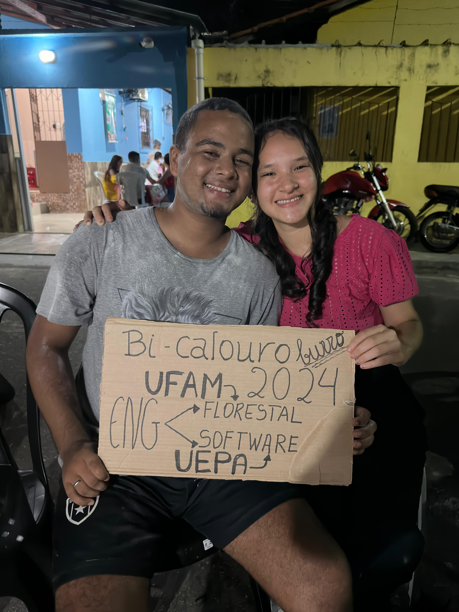

"Definitivamente eu ganhei na loteria quando o conheci", afirma Henrique David. Aos 14 anos, ele encontrou o amor de sua vida, Elisa Araújo. Os dois se conheceram em 2020, porém tiveram que se afastar pela questão da COVID-19 e então somente em 2021 puderam se reencontrar e após um certo período trocando mensagens, no dia 01/04/2021 aconteceu o in(esperado) PRIMEIRO BEIJO desde então os dois começaram a se encontrar com mais frequência e começaram a ter uma relação, algo que por hora se aproximava de um namoro. Tempo vai e tempo vem, os jovens apaixonados encontraram divergências pelo caminho e enfretaram dificuldades e decidiram que seria melhor trilhar caminhos diferentes, passando assim cerca de 6 meses afastados.
Bem-vinda, Meu Amor! ❤️
Hoje celebramos a nossa história, o nosso amor e tudo o que construímos juntos.
945 dias ao teu lado, cada um mais feliz que o anterior. São 2 anos e 7 meses de muito companheirismo e aprendizado.
Como é bom dividir a vida com você, meu amor! Vivemos tantas coisas juntos, e apesar de todas as mudanças, uma coisa sempre permaneceu constante:
a certeza de que você foi e sempre será a melhor coisa que já me aconteceu.
Te amar é fácil demais. Nunca fui tão feliz quanto desde o momento em que você entrou na minha vida. É inexplicável a sorte que tenho por compartilhar a minha vida com você. Obrigado por ser mais do que eu poderia sonhar, por estar comigo nos momentos bons e ruins, por sempre extrair o melhor de mim. Você é a minha melhor parte, e eu espero que fique comigo para sempre, porque eu para sempre irei te amar! 💖
Tempo juntos:
Edição Especial - 2024
Casal Bilionário do Ano!
Durante esse tempo, Henrique percebeu o quanto sentia falta de Elisa. "Eu não sei como pude ficar tanto tempo sem ela ao meu lado. Ela é única e insubstituível", ele confessa. Elisa também sentiu o mesmo, e os dois decidiram tentar de novo, após semanas conversando e se encontrando novamente, no dia 21/05/2022 O TÃO ESPERADO PEDIDO DE NAMORO SAIU e acreditem amigos.. ela disse SIM Desde então, é claro.. passaram muitos altos e baixos, dificuldades e desafios que todo casal enfrentam, mas, seguiram juntos superando qualquer coisa e hoje dia 21/12/2024 estão eles completando incríveis 2 anos e 7 meses de namoro, de um namoro que se solidifica cada vez mais..
Henrique sempre quis fazer faculdade longe de casa por motivos pessoais, enquanto Elisa desejava fazer faculdade ao lado de casa para ficar mais pertinho da família. As pessoas sempre duvidaram deles, que por conta do namoro os dois perderiam o foco dos estudos e iriam querer ficar só namorando mas para provar que se pode namorar e conseguir focar nos estudos, os dois passaram a estudar juntos para o tenebroso ENEM, Elisa sempre se dedicou demais e enquanto Henrique era mais relaxado em questão do pré-enem, e então o ano de 2023 se passou e o tão esperado resultado das faculdades e do próprio enem saíram e acreditem ou não OS DOIS PASSARAM PARA A MESMA FACULDADE E O MESMO CURSO, além de calar a boca de muitas pessoas, eles conseguriram o que tanto almejaram durante o ano inteiro. Mas como nem tudo são flores, houveram obstáculos, o sonho de estudar juntos no mesmo lugar estava cada vez mais distante novamente até que se tornou inacessível. Henrique acabou sendo chamado para uma faculdade mais perto de casa(faculdade essa que Elisa não havia sido chamada) e no curso que tanto sonhara, apesar de saber que seguindo esse caminho de certa forma iria prejudicar Elisa, Henrique se viu sem escolhas e acabou seguindo e por um período de uns 2 meses eles ficaram separados em cidades diferentes, até que então Elisa foi chamada para a mesma faculdade de Henrique e ali então, os dois tiveram a certeza que Deus lhes queriam juntos e até hoje seguem juntos, na mesma cidade, mesma faculade e, pásmem, na mesma casa. E seguem até hoje vivendo um dos grandes sonhos do casal.
Nossas Fotos

Saiba o Quanto Eu Te Amo
eu te amo tanto
Que o meu peito me dói como em doença
E quanto mais me seja a dor intensa
Mais cresce na minha alma teu encanto. ❤️
Eu poderia trazer todos os versos de Vinícius de Moraes para te dizer
o quanto eu te amo, mas nem a maior palavra, o maior texto seriam capazes
de descrever algo tão intenso e imensuravél. mas lhe digo hoje.. EU TE AMO !